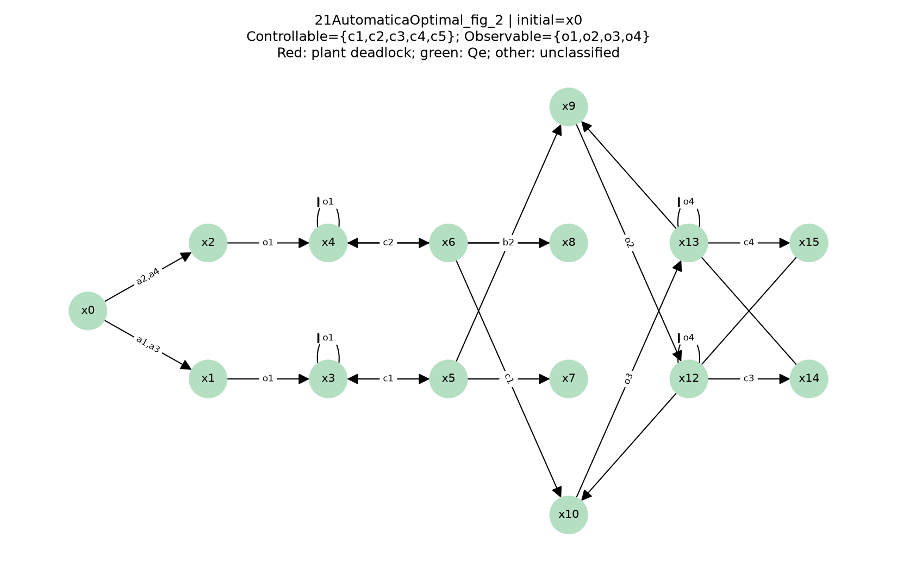
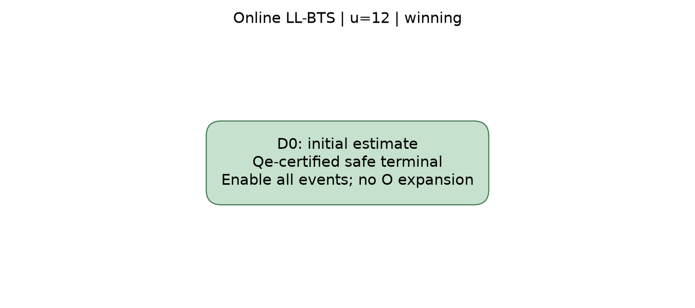

来源21AutomaticaOptimal_fig_2；保留原部分观测/控制划分。当前模型全部状态可安全运行，组合式Qe证书使LL-BTS直接终止。该例专门展示证书收益，不代表任意危险混合系统。
实测online（含组合式预处理）：25.100 µs；Python峰值 7,192 bytes。传统逐模式根阶段估算约31.02天，记录内存约131.28 TiB。Offline完整综合未运行，估算不是完整实测，通常会先内存不足。
方法、运算、假设与限制 · 完整数值 · 目标规模抽样 · 可执行监督器 · 精确因子化闭环

